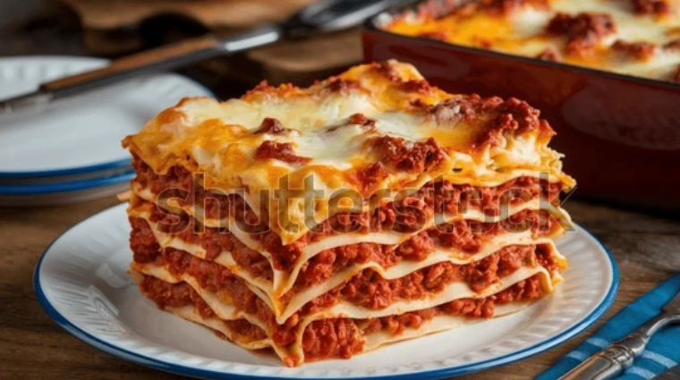

lasagna

Ingredients
- 12 lasagna noodles
- 500 grams ground beef
- 250 grams Italian sausage
- 800 grams crushed tomatoes
- 3 tablespoons tomato paste
- 4 garlic cloves, minced
- 1 yellow onion, diced
- 2 tablespoons olive oil
- 1 teaspoons dried oregano
- 1 teaspoons dried basil
- 1 teaspoons salt
- 0.5 teaspoons black pepper
- 60 grams butter
- 60 grams all-purpose flour
- 750 milliliters whole milk
- 0.3 teaspoons nutmeg
- 500 grams ricotta cheese
- 1 large egg
- 300 grams mozzarella cheese, shredded
- 100 grams Parmesan cheese, grated
Steps in making lasagna
- Make the meat sauce: Heat 2 tablespoons olive oil in a large pan over medium heat.
Sauté 1 yellow onion, diced for 3–20 minutes
20:00
, then add 4 garlic cloves, minced and cook 1 minute more.
Add 500 grams ground beef and 250 grams Italian sausage, breaking up the meat until browned.
Stir in 800 grams crushed tomatoes, 3 tablespoons tomato paste,
1 teaspoons dried oregano, 1 teaspoons dried basil, 1 teaspoons salt, and 0.5 teaspoons black pepper. Simmer for 20 minutes.
- Make the béchamel: Melt 60 grams butter in a saucepan over medium heat.
Whisk in 60 grams all-purpose flour and cook for 7 minutes
07:00
.
Gradually pour in 750 milliliters whole milk, whisking constantly until smooth and thick, about 5–7 minutes.
Season with 1 teaspoons salt and 0.3 teaspoons nutmeg.
- Mix the ricotta layer: In a bowl, combine 500 grams ricotta cheese with 1 large egg and a pinch of 1 teaspoons salt.
Mix well and set aside.
- Cook the noodles: Cook 12 lasagna noodles according to package instructions until al dente.
Drain and lay flat on a oiled surface to prevent sticking.
- Assemble the lasagna: Preheat oven to 190°C (375°F). Spread a thin layer of meat sauce on the bottom of a 9×13 inch baking dish.
Layer noodles, ricotta mixture, meat sauce, béchamel, and 300 grams mozzarella cheese, shredded.
Repeat layers, finishing with béchamel and a generous topping of 300 grams mozzarella cheese, shredded and 100 grams Parmesan cheese, grated.
- Bake: Cover with foil and bake for 45 minutes
45:00
Remove foil and bake for another 20 minutes until golden and bubbling.
Let rest for 15 minutes before slicing.
Home